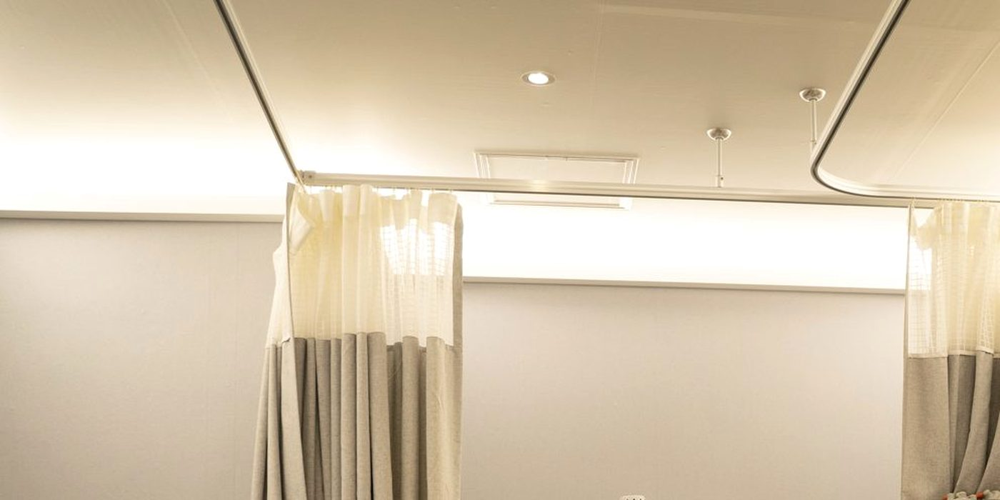

한 줄 답변
직장이 바뀌는 시기에는 해결되지 않은 걱정이 밤에 떠올라 잠이 얕아지기 쉬워서, 걱정을 낮에 글로 옮겨 두고 기상 시각을 지키는 것부터 정리합니다.
직장이 바뀌는 시기에는 해결되지 않은 걱정이 밤에 떠올라 잠이 얕아지기 쉬워서, 걱정을 낮에 글로 옮겨 두고 기상 시각을 지키는 것부터 정리합니다.
여쭙는 것
- 걱정이 주로 어느 시간대에 떠오르나요?
- 잠들기 전에 계산이나 계획을 머릿속으로 계속 돌리게 되나요?
- 새벽에 깨서 다시 같은 생각이 이어지나요?
생활에서 해 볼 것
- 저녁 식사 뒤 10분 동안 걱정거리를 종이에 적고 "내일 다시 본다"고 닫아 두기
- 이력서나 연락은 밤 시간을 피해 낮에 정해 둔 시각에 하기
- 쉬는 날에도 일어나는 시각을 크게 바꾸지 않기
한의원에서 함께 살필 것
- 걱정이 이어져 잠들기까지 오래 걸리는 경우 긴장의 정도와 수면 시각을 함께 살핍니다.
- 새벽에 깨서 다시 잠들기 어려운 경우 식사와 소화, 몸의 열감을 함께 살핍니다.
- 입맛이 줄거나 어깨와 목이 굳는 경우 생활 전체의 피로를 함께 살핍니다.
먼저 확인이 필요한 신호
- 잠을 거의 자지 못한 날이 일주일 넘게 이어지는 경우
- 가슴 두근거림이나 숨 가쁨이 함께 있는 경우
- 깊은 우울감이나 스스로를 해치고 싶다는 생각이 드는 경우에는 바로 109(자살예방상…
퇴사 날짜가 정해졌거나 이직 결과를 기다리는 시기에는 낮에는 괜찮다가도 밤이 되면 생각이 많아집니다.
먼저 이렇게 여쭙니다
- 걱정이 주로 어느 시간대에 떠오르나요?
- 잠들기 전에 계산이나 계획을 머릿속으로 계속 돌리게 되나요?
- 새벽에 깨서 다시 같은 생각이 이어지나요?
- 이 시기 전후로 식사와 술, 카페인 양이 달라졌나요?
일상에서 먼저 해 볼 수 있는 것
- 저녁 식사 뒤 10분 동안 걱정거리를 종이에 적고 "내일 다시 본다"고 닫아 두기
- 이력서나 연락은 밤 시간을 피해 낮에 정해 둔 시각에 하기
- 쉬는 날에도 일어나는 시각을 크게 바꾸지 않기
- 늦은 시각의 술이나 카페인으로 버티지 않기
한의원에서 함께 살필 수 있는 경우
- 걱정이 이어져 잠들기까지 오래 걸리는 경우 긴장의 정도와 수면 시각을 함께 살핍니다.
- 새벽에 깨서 다시 잠들기 어려운 경우 식사와 소화, 몸의 열감을 함께 살핍니다.
- 입맛이 줄거나 어깨와 목이 굳는 경우 생활 전체의 피로를 함께 살핍니다.
진료실에서 이야기를 들은 뒤 어떤 방법이 맞을지 함께 정합니다.

이런 증상은 먼저 확인이 필요합니다
- 잠을 거의 자지 못한 날이 일주일 넘게 이어지는 경우
- 가슴 두근거림이나 숨 가쁨이 함께 있는 경우
- 깊은 우울감이나 스스로를 해치고 싶다는 생각이 드는 경우에는 바로 109(자살예방상담전화)나 119, 가까운 응급실에 연락하세요. 가까운 정신건강복지센터에서도 상담받을 수 있습니다.
복용 중인 수면제나 신경안정제는 처방한 의사와 상의 없이 줄이거나 끊지 않습니다.
자주 묻는 질문
걱정을 적어 두면 정말 도움이 되나요?
머릿속에서 계속 도는 생각을 밖으로 꺼내 두면 밤에 덜 매달리게 된다는 분이 많습니다. 부담이 적어 해 볼 만한 방법입니다.
술을 한 잔 하고 자면 더 잘 자지 않나요?
잠이 드는 데는 쉬워 보여도 밤 후반에 자주 깨고 얕아지는 분이 많습니다.
한의원에서는 무엇을 보나요?
걱정이 떠오르는 시각, 잠의 모양, 식사와 몸의 긴장을 함께 묻고 살핍니다.
이 글은 일반적인 건강 정보이며 개인의 진단이나 치료를 대신하지 않습니다. 증상이 있거나 복용 중인 약이 있다면 진료를 통해 확인하세요. 치료 효과는 개인마다 다를 수 있습니다.
지난 이야기부터 이어서 묻습니다
좋은꿈참사랑한의원 노량진점은 재진 때 지난번 이야기부터 이어서 여쭙니다. 진료시간과 예약은 오시는 길에서 확인하세요.
좋은꿈참사랑한의원 노량진점은 재진 때 지난번 이야기부터 이어서 여쭙니다. 진료시간과 예약은 오시는 길에서 확인하세요.